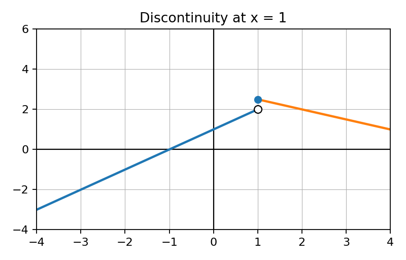

Unit 2 DOK 4.3 Investigation-Based CER Task V1
Name:
Show work and mark answers clearly.

Claim: The function is continuous at the corner but not differentiable there. Write a CER response.
Claim: The function is continuous at the corner but not differentiable there. Write a CER response.
| t | 1.9 | 1.99 | 2.01 | 2.1 |
|---|---|---|---|---|
| avg slope near 2 | 3.8 | 3.98 | 4.02 | 4.2 |
Claim: $f'(2)\approx 4$. Use evidence and reasoning.
Data show a product output $R(x)=x^2(x+1)$. Make a claim about instantaneous rate at $x=3$ and justify.

Claim: The derivative cannot exist at $x=1$. Use evidence and reasoning.
A table of position values suggests velocity is increasing. Make and defend a claim using average rates.
Investigate whether $f(x)=x^{2/3}$ is differentiable at $x=0$ using slope behavior. Make a claim and justify.